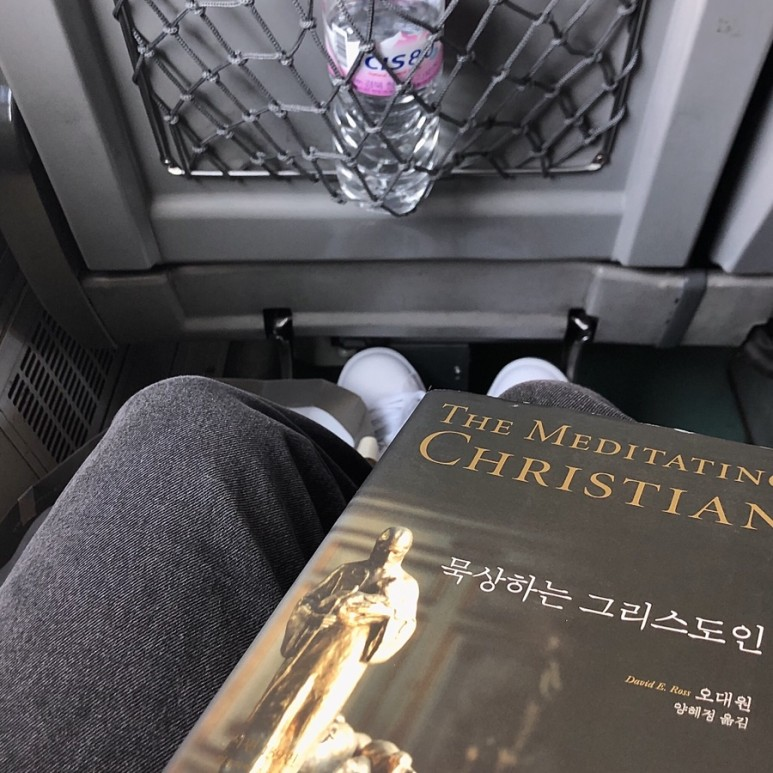

<!doctype html>
<html>
    <head>
        <meta charset="UTF-8">
        <meta name = "viewport" content = "width = device-width, initial-scale=1.0">
        <title>묵상하는 그리스도인 - 진 에드워드</title>
        <link rel="stylesheet" type="text/css" href="../../css/pages.css">
    </head>
</html>

<body>
    <header>
        <h3><a href = "../../index.html">HAGUS <br> HARDWARE</a></h3> 
        <ul id="main_menu">
        </ul>

        <script src = "../../MainMenu.js"></script>
    </header>

    <section class="section">
    <div id = "tag_menu">
    </div>

    <script src = "../../tag_menu.js"></script>

    <div id = "tag_list">
        <div class="l_title"><a href = "../../tag.html">Booklist</a></div><hr>
        <div class = "l_subtitle"><div class = "title"><a href = "../../tag.html"><strong>묵상하는 그리스도인 - 진 에드워드</div><div id="date">2020.10.10</div></strong></a></div>
             <!--content-->
        <div class = "content">
<pre>

묵상은 본질적으로 단순하다
.
. 
. 

"마리아가 한 것처럼 성경의 말씀을 받아들이고 그 말씀을 마음에 두어 생각하라" - 본회퍼

"가장 달콤한 삶은 하나님과 끊임없이 대화하며 사는 삶이다" - 로렌스 수사

대부분의 그리스도인들은 예수님을 위해 일하고 그분의 비전을 들고 달리는 법을 안다 어떤 이들은 그분과 함께 걷는 법도 안다 하지만 무엇보다도 예수님과 함께 앉는 법을 배워야 한다


</pre>

        <br>
        <br>
        <br>
        </div>


    </div>

</section>

    
</body>


